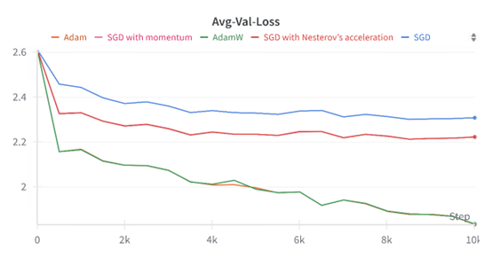

About Me
I get my Mphil degree in Mathematics from the Chinese University of Hong Kong, Shenzhen and BSC degree in Applied Mathematics from Tongji University.
Here are some visualizations of my research and projects.
Research Experiences & Projects
Valuation Model of Chinese Convertible Bonds Based on Monte Carlo Simulation
We tackle the problem of pricing Chinese convertible bonds(CCBs) using Monte Carlo simulation and dynamic programming. At each exercise time, we use the state variables of the underlying stock to regress the continuation value, and apply standard backward induction to get the coefficients from the current time to time zero. This process ultimately determines the CCB price.

In this part, we use historical data to backtest and validate the predictive ability of our model price for CCBs. We use the model prices as a determining factor for backtesting and observe their returns : assume the transaction cost is 0.1%, long the most underpriced 10 CCBs among 487 CCBs in the market and rebalance daily from February 18, 2023 to July 17, 2023, totally 118 trade days. See the article.

Supervised Fine-Tuning of GPT-2 for Conversational Modeling
Post fine-tuning, the model displayed a marked improvement in generating coherent and relevant dialogues...

We compare the convergence using different optimizers such as SGD, SGD with momentum, SGD with Nesterov’s acceleration, and Adam / AdamW

Convertible Bond Automated Trading System
This automated trading system is based on our previous work on convertible bond pricing...